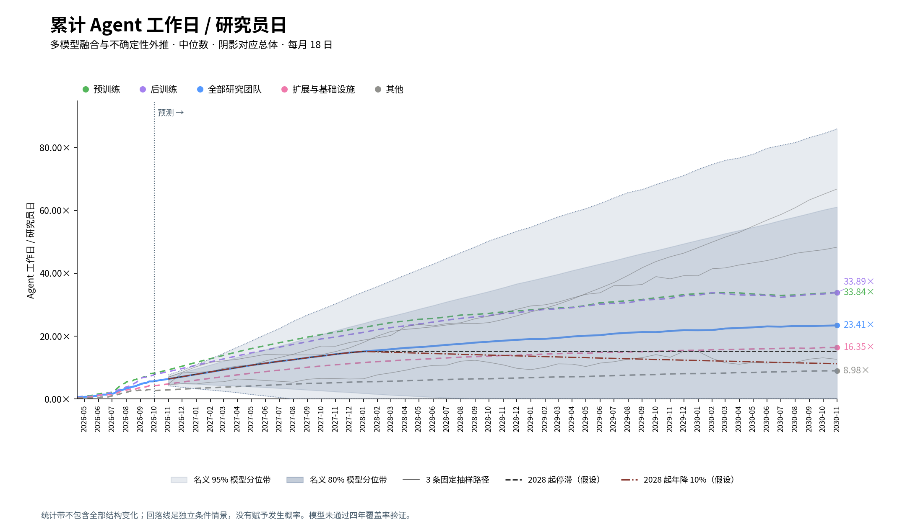
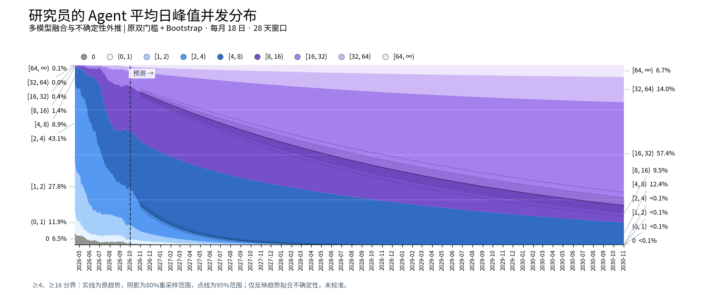
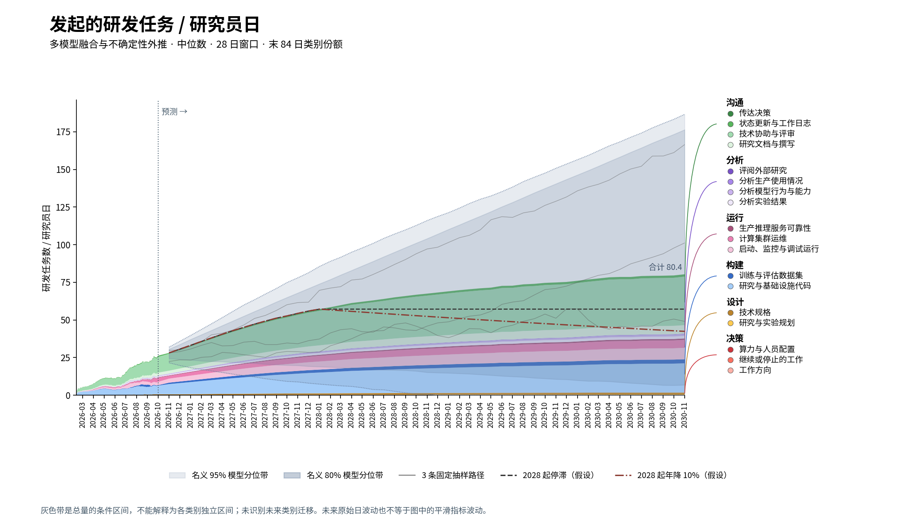
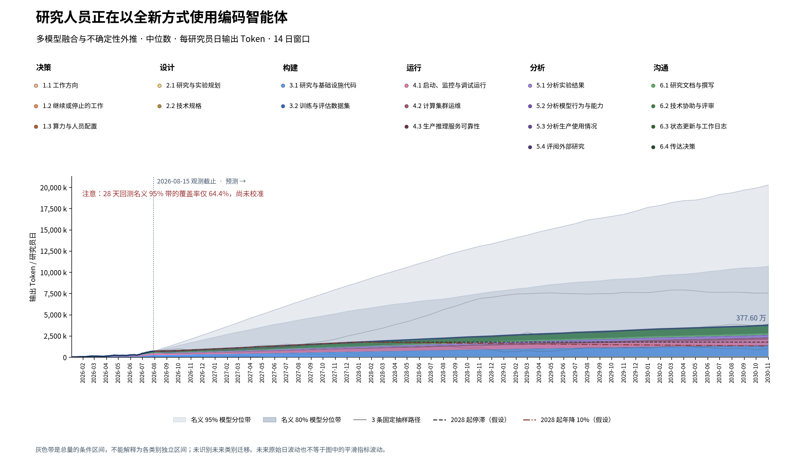
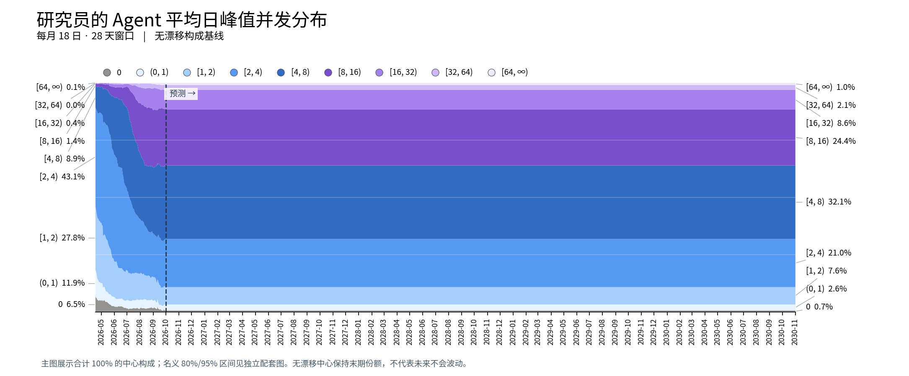
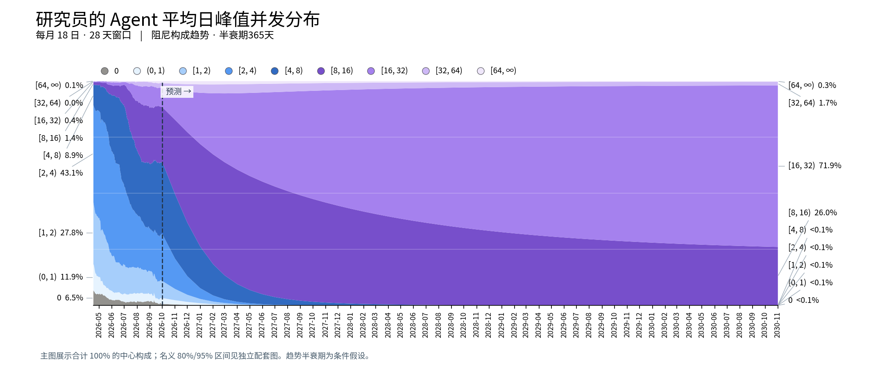
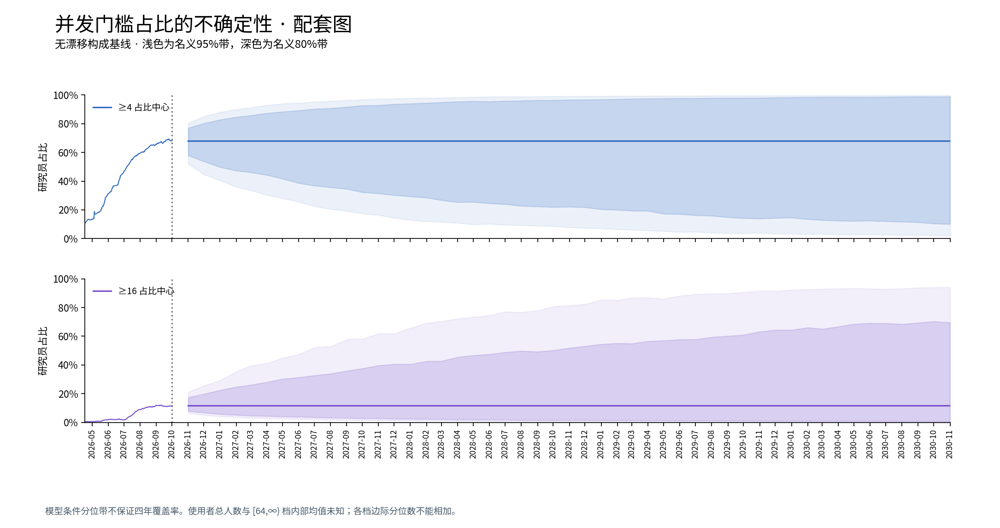
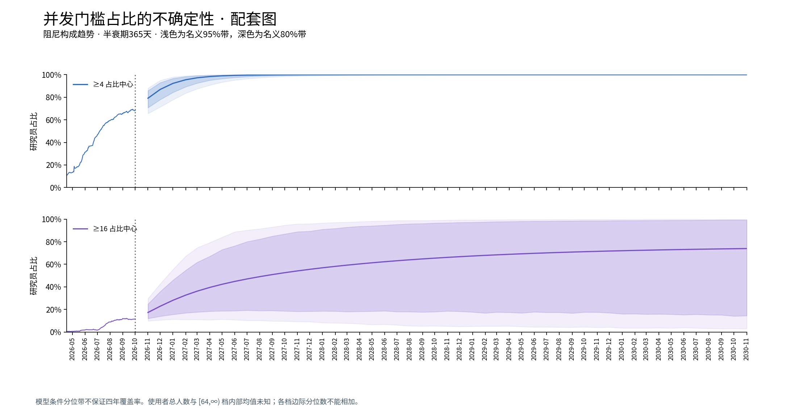
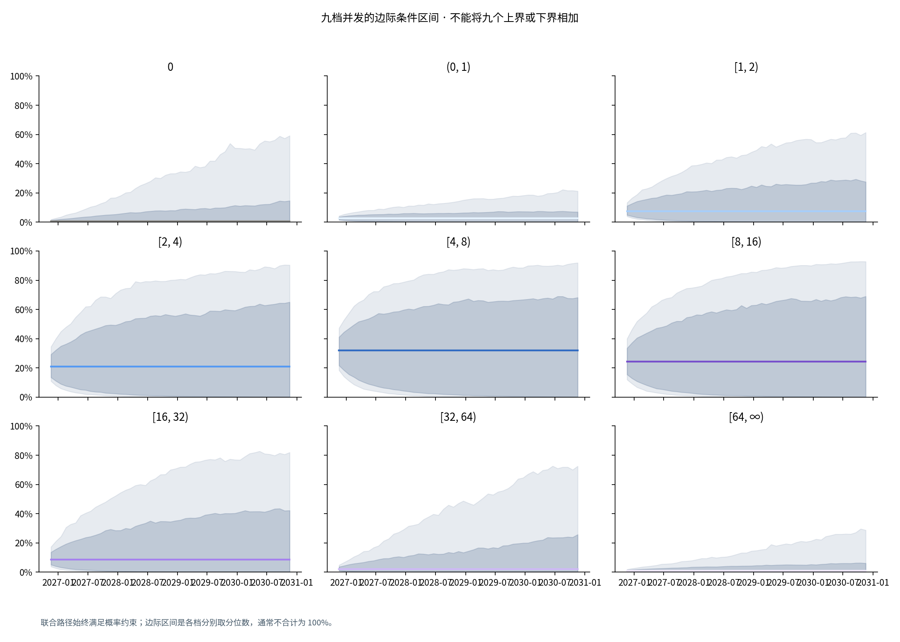

Agent 工作负载：趋势、条件区间与回落情景
没有把情景范围当作置信区间；预测对象是公开平滑指标，不是原始日流量。四年覆盖率无法用当前历史验证。
monthly_workdays

monthly_concurrency

monthly_tasks

monthly_output_tokens

实验算法诊断图（非四张主图）
concurrency_no_drift

concurrency_damped

concurrency_threshold_intervals

concurrency_damped_threshold_intervals

concurrency_bin_intervals
